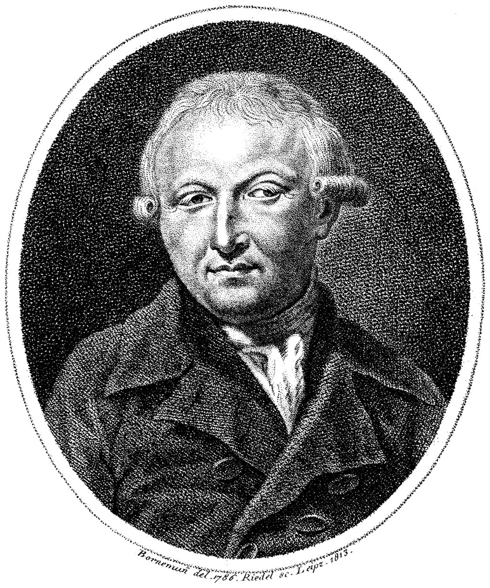

Forkel's biography: the legend gets an author

Fifty-two years after Bach's death, the legend finally got an author. Johann Nikolaus Forkel — Göttingen's university music director, and one of the founders of music history as a scholarly discipline — had spent years corresponding with Emanuel and Friedemann, patiently harvesting the sons' memories of their father while the sons were still alive to remember. In 1802 he published the result: Ueber Johann Sebastian Bachs Leben, Kunst und Kunstwerke, the first biography of Johann Sebastian Bach. It runs to only about sixty pages, and those sixty pages fixed the image of the man for a century. The moonlight copying, the Marchand duel, the Goldberg insomnia story — much of the material this timeline flags as tradition enters the written record precisely here: family memory, professionally embalmed by the first scholar who thought it worth preserving.
But Forkel was not writing an act of preservation only, and he said so. His motive was explicit, and it built the political engine that would power the entire revival. He wrote with Napoleon's armies redrawing the map of Germany, addressing a fragmented nation that possessed no unified state and was busily assembling a unified culture instead — and into that project he conscripted Bach. This art, he declared, is "an invaluable national heritage, with which no other nation has anything to be compared." His closing charge became famous: "this great man... was a German. Be proud of him, German fatherland, but be worthy of him too." Bach — learned, deep, unfashionably serious, and safely dead — was installed as a foundation stone of German cultural identity, and the installation held. Applegate's study, this arc's modern authority, traces how completely the 1829 revival ran on exactly this fuel: when the Matthew Passion returned to a Berlin concert hall a generation later, it returned as national patrimony because Forkel had filed the paperwork.
Read today, the little book is irreducibly double, and the timeline insists on both halves. It is genuinely precious: the sons' firsthand testimony exists nowhere else, and through Forkel we know things about Bach that no document independently records — his practicing habits, the sequence in which he taught his students, his verdicts on other composers. Lose Forkel and whole rooms of the biography go dark. And it is genuinely tendentious: the actual Bach was a cosmopolitan synthesizer who spent his life absorbing and fusing French and Italian styles with the German inheritance, and Forkel recast him as essentially, exclusively German — a purification the man's own scores contradict on nearly every page. The embellishments of family memory and the pressures of national purpose run through the same sixty pages as the irreplaceable testimony, and no later scholarship has ever fully separated the strands.
That is why this card matters beyond its date. Every revival needs a story — a shape, a hero, a reason the forgotten thing deserves remembering — and Forkel wrote Bach's: accurate, embellished, and weaponized in one small volume. The nationalist frame he built carried Bach's return for a hundred years, and it also did real interpretive damage that scholarship has spent generations unwinding, from the Germanization of a European composer to the sanding of a difficult professional into a national saint. The timeline offers the book as its cleanest single warning about everything in this arc: reception is never neutral; someone is always using the past, and the user's fingerprints stay on it. When the following cards show a Berlin choral society, a copied score, and a packed hall in 1829, remember that the audience arrived already knowing what Bach meant — because a Göttingen historian had told them, twenty-seven years in advance. The full text is freely available; see the bibliography.
Continue with the era essay: The Eclipse: 1750–1829, or follow the story Forkel armed: the copyist's score that reached a Berlin prodigy.
Forkel, Ueber Johann Sebastian Bachs Leben, Kunst und Kunstwerke (1802)
Applegate, Bach in Berlin
→ full bibliography & links